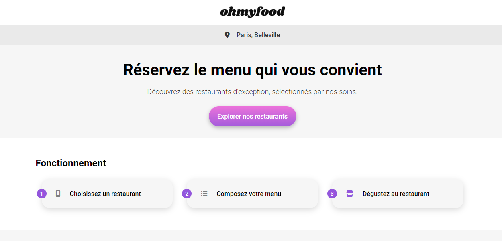

Projets

Pour la faire courte, développeuse front-end basée au fin fond de la Bourgogne.
Et pour ceux que ça intéresse, j'ai mis plus d'infos ici.
Etudiante chez Openclassrooms. Ma plus grande passion dans la vie c'est d'apprendre, de comprendre le fonctionnement d'un maximum de choses. Une passion qui englobe tout un tas de centres d'intérêts divers et variés, les plus notables étant les langues et l'informatique en général.
Et que fais-je de toutes ces connaissances accumulées ? A part flex auprès de mon entourage ? Et bien je mets les unes au service des autres. Exemple: En ce moment j'apprends le polonais et je code. Je suis donc en train de coder un site pour apprendre le polonais (projet à venir bientôt sur mon portfolio! Portfolio qui sera un jour dispo en polonais du coup...).
OpenClassrooms: Septembre 2023 - En cours...